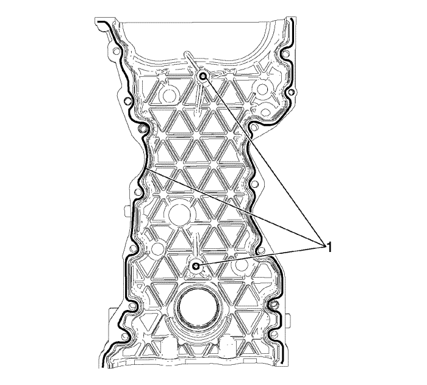

Sustitución de la cubierta delantera del motor
Herramientas especiales
EN-50435 Pasador guía
Si desea informarse sobre herramientas regionales equivalentes, consultar Herramientas especiales .
Procedimiento de desmontaje
- Instale el dispositivo de soporte del motor. Consultar Dispositivo de soporte del motor .
- Extraiga la correa de accionamiento y el tensor de la correa de accionamiento. Consultar Sustitución del tensor de la correa de accionamiento .
- Desmonte la cubierta y la polea del cigüeñal. Consultar Sustitución de la polea del cigüeñal .
- Retire la fijación y el soporte del motor. Consultar Sustitución del soporte de montaje del motor .
- Retire la cubierta frontal del motor desde los pernos del cárter de aceite (1).
- Retire los tornillos de la tapa delantera del motor.
- Retire la cubierta delantera del motor (2).
- Si fuera necesario, desmonte la junta delantera del cigüeñal. Consultar Sustitución del retén de aceite delantero del cigüeñal .
Procedimiento de montaje
- Si se desmontase, monte una nueva junta delantera del cigüeñal. Consultar Sustitución del retén de aceite delantero del cigüeñal .

Nota: Asegúrese de que la superficie de la cubierta delantera no tiene aceite, grasa ni material de sellado viejo.
- Aplique sellador (Three-Bond, 12378521) sobre la línea para sellador (1).
- Aplique también sellador (Three-Bond, 12378521) en la parte inferior de la tapa delantera en la superficie de sellado del cárter de aceite.
- Monte los pasadores guía EN-50435 (Ctdad.:2) en el bloque motor y en la culata para ayudar a alinear la cubierta.
- Monte la tapa delantera del motor.
- Comience por los tornillos de la cubierta delantera y retire los pasadores guía EN-50435.
Precaución: Consulte Precaución con las fijaciones en la sección Prólogo
- Coloque el resto de los pernos de la tapa delantera del motor y apriete del siguiente modo:
| • | Tornillo de retención de la cubierta delantera de la cadena de distribución (M8): 22 N·m (16 lib. pie) |
| • | Tornillo de retención de la cubierta delantera de la cadena de distribución (M6): 9 N·m (80 lib. pulg) |
- Monte el tornillos de la tapa delantera del motor al cárter de aceite y apriételos hasta 25 N·m (18 lib. pie).
- Monte la fijación y el soporte del motor. Consultar Sustitución del soporte de montaje del motor .
- Monte la cubierta y la polea del cigüeñal. Consultar Sustitución de la polea del cigüeñal .
- Monte el tensor de la correa de accionamiento y la correa de accionamiento Consultar Sustitución del tensor de la correa de accionamiento .
- Retire el dispositivo de soporte del motor.
| © Copyright Chevrolet Europe. All rights reserved |